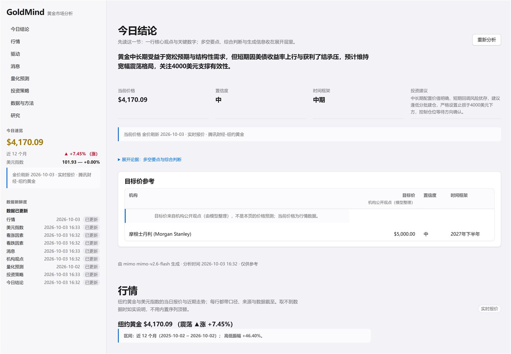

01
Agent Runtime 运行时与可靠性
让会话和目标在真实负载下可恢复、可观察、可收尾；让流式输出在复杂内容边界也不阻塞。
- Session / goal lifecycle
- Scheduling, locks & leases
- Streaming stability
GitHub snapshot · 2026-10-27 · 含私密贡献
01 / Focus
不把 Agent 当成一次性演示。真正决定体验的，是长时间运行时的状态、出错时的边界，以及跨平台之后还能不能复现。
让会话和目标在真实负载下可恢复、可观察、可收尾；让流式输出在复杂内容边界也不阻塞。
把权限边界写进实现：租户密钥隔离、原子写入、失败关闭，以及可验证的重试语义。
跨平台不是兼容性附加题，而是运行时正确性的一部分；CI 与验证门禁必须能复现这些边界。
02 / Selected work
这些不是收藏列表，而是我在开源项目中实际修改、验证并合并过的工作。按方向筛选，查看每项工作的落点。
03 / Personal projects
从 Agent 工具链到真实可用的产品界面，这三项最有代表性。代码、文档和验证都在仓库里。

Featured project · Python / Vue 3
面向国际黄金市场的 AI 数据分析看板：自动采集行情与新闻，生成多空对照、机构观点、量化情景与可追溯的数据新鲜度。数据不可用时明确说「不可用」，而不是编造。
04 / Activity
贡献节奏和最近的合并记录，能更直接地说明时间花在了哪里。
Contribution rhythm
Recently merged
05 / About
我把大部分时间花在开源 Agent 的真实边界上：让流式输出不阻塞，让沙箱的密钥边界更清楚，让 Windows 上的 Agent 和 Linux 一样可用，也让 CI 能证明这些改动没有把别处弄坏。
长期目标很简单：持续让 AI Agent 在开源世界里跑得稳、跑得安全。欢迎交流 Agent、沙箱与运行时可靠性，也欢迎单纯打个招呼。
键盘之外，我也踢球、到处走走、认识有故事的人。永远在学习，也始终觉得总有人比自己更强是一件好事。